pacman::p_load(tmap, sf, raster, spatstat, sparr, maptools, sp, tidyverse, DT, gridExtra, animation)Take-home Exercise 1
Take-home
In this exercise, We will be analyzing armed conflict data in Myanmar, using spatial point pattern analysis to understand the distribution and relationships between conflict events. We’ll also create maps to visualize the results and interpret the spatial patterns.
1. Introduction
1.1 Context
In 2024 armed conflict continues to be a devastating global issue, with millions of people affected each year. Recent years have seen a surge in conflicts, driven by factors such as political instability, regional tensions, and resource scarcity. Myanmar, in particular, has experienced significant armed conflict in recent years, including the 2021 military coup and subsequent violence.
TODO: Lit review
1.2 Objectives
- Analyze the spatial distribution of armed conflict events in Myanmar.
- Identify patterns and trends in the temporal distribution of conflict events.
- Identify potential hotspots of conflict activity.
- Provide insights for policymakers and humanitarian organizations working to address the conflict in Myanmar.
2. Setup
2.1 Loading Packages
In this project we will be using the following packages:
tmap: A package for creating thematic maps in R. It provides a simple and flexible interface for customizing maps and exporting them in various formats.sf: A package for simple feature data, which is a modern standard for representing geographic features. It provides efficient data structures and functions for spatial operations.raster: A package for working with raster data, such as images and digital elevation models. It offers tools for reading, writing, manipulating, and analyzing raster data.spatstat: A package for spatial point pattern analysis. It provides functions for analyzing the distribution and relationships between points in a study area.maptools: A package for reading and writing various spatial data formats, including shapefiles and KML. It also provides tools for converting between different spatial data structures.sp: A package for spatial data in R. It provides classes and functions for representing and manipulating spatial data, such as points, lines, and polygons.tidyverse: A collection of R packages designed for data manipulation, visualization, and analysis. It includes packages like dplyr, ggplot2, and tidyr, which are commonly used in data science workflows.
2.2 Loading Data
The dataset used in this analysis is sourced from the Armed Conflict Location & Event Data (ACLED) database. It contains information on various types of armed conflict events, including Battles, Explosion/Remote violence, Strategic developments, Protest, Riots, and Violence against civilians. The data covers the period from January 2021 to June 2024 and provides specific details such as event date, location coordinates, actor information, and more.
# Read CSV files
acled_2021_23 <- read_csv("data/aspatial/2021-2023-Myanmar.csv")
acled_2024 <- read_csv("data/aspatial/2024-Myanmar.csv")Next we load Myanmar District and State Boundary from Myanmar Information Management Unit (MIMU) and projected onto the correct CRS.
# Read Myanmar Boundary
mym_sf <- st_read(dsn = "data/geospatial",
layer = "mmr_polbnda_adm2_250k_mimu") %>%
st_transform(crs = 32647)Reading layer `mmr_polbnda_adm2_250k_mimu' from data source
`/Users/jeffery/Projects/Y4S1/IS415/S0methingSimple/IS415-GAA/take-home_ex/ex01/data/geospatial'
using driver `ESRI Shapefile'
Simple feature collection with 80 features and 7 fields
Geometry type: MULTIPOLYGON
Dimension: XY
Bounding box: xmin: 92.1721 ymin: 9.696844 xmax: 101.17 ymax: 28.54554
Geodetic CRS: WGS 84mym_st_sf <- st_read(dsn = "data/geospatial",
layer = "mmr_polbnda_adm1_250k_mimu_1") %>%
st_transform(crs = 32647)Reading layer `mmr_polbnda_adm1_250k_mimu_1' from data source
`/Users/jeffery/Projects/Y4S1/IS415/S0methingSimple/IS415-GAA/take-home_ex/ex01/data/geospatial'
using driver `ESRI Shapefile'
Simple feature collection with 15 features and 6 fields
Geometry type: MULTIPOLYGON
Dimension: XY
Bounding box: xmin: 92.1721 ymin: 9.696844 xmax: 101.17 ymax: 28.54554
Geodetic CRS: WGS 843. Data Wrangling and Exploration
3.1 CRS Projection & Formatting
The initial step involved reading the ACLED data into R and converting it into a sf data frame, specifying the longitude and latitude columns as coordinates and the WGS84 coordinate reference system (CRS). To ensure consistency with the administrative boundary data, the CRS was projected to EPSG:32647.
Additional data cleaning and preparation steps were performed, including handling missing values and formatting dates.
# Combine data frames
acled_combined <- bind_rows(acled_2021_23, acled_2024)
acled_full_sf <- acled_combined %>%
st_as_sf(coords = c("longitude", "latitude"), crs = 4326) %>%
st_transform(crs = 32647) %>%
mutate(event_date = dmy(event_date))3.2 Data Cleaning
We conducted a preliminary data quality check on our key spatial features to ensure data integrity. While no missing values were found in the columns, we did identify duplicate geometries. This is not unexpected, as the data represents a time series, and multiple events may occur in the same location over time.
# Check for null values in key columns
na_count <- acled_full_sf %>%
summarise(na_geometry = sum(is.na(geometry)),
na_event_date = sum(is.na(event_date)))
# Check for null values in key columns
duplicate_count <- acled_full_sf %>%
summarise(duplicate_event_id = sum(duplicated(event_id_cnty)),
duplicate_geometry = sum(duplicated(geometry)))
print(na_count)Simple feature collection with 1 feature and 2 fields
Geometry type: MULTIPOINT
Dimension: XY
Bounding box: xmin: -208804.4 ymin: 1103500 xmax: 640934.5 ymax: 3042960
Projected CRS: WGS 84 / UTM zone 47N
# A tibble: 1 × 3
na_geometry na_event_date geometry
<int> <int> <MULTIPOINT [m]>
1 0 0 ((-208804.4 2357274), (-207135 2358896), (-206931.7…print(duplicate_count)Simple feature collection with 1 feature and 2 fields
Geometry type: MULTIPOINT
Dimension: XY
Bounding box: xmin: -208804.4 ymin: 1103500 xmax: 640934.5 ymax: 3042960
Projected CRS: WGS 84 / UTM zone 47N
# A tibble: 1 × 3
duplicate_event_id duplicate_geometry geometry
<int> <int> <MULTIPOINT [m]>
1 0 44101 ((-208804.4 2357274), (-207135 2358896)…3.3 Data Wrangling
To prepare our dataframe for subsequent geoprocessing, we performed necessary data joining and processing steps. We then saved the processed state of the dataframe for future reference and analysis.
3.3.1 Joining with District Data
We will start by adding the district and state into our acled_sf dataframe using a spatial join
acled_sf <- st_join(acled_full_sf, mym_sf) %>%
dplyr::select(event_date, event_type, fatalities, ST, DT, admin1, geometry) %>%
rename(state = ST, district = DT)3.3.2 Missing Fields (State)
Upon joining the dataframes, we observed that a small number of points were located outside the boundary dataframe. However, this is not a significant concern for our subsequent analysis, as we will be focusing on other states.
datatable(acled_sf %>%
filter(is.na(state)) %>%
dplyr::select(event_date, event_type, admin1)
)3.3.3 Adding Quarter and Saving RDS
We will also be extracting out the quarters and years for our subsequent analysis.
acled_sf <- acled_sf %>%
mutate(quarter = quarter(event_date, with_year = TRUE)) %>%
mutate(year = year(event_date)) %>%
dplyr::select(-admin1)
acled_sfSimple feature collection with 51553 features and 7 fields
Geometry type: POINT
Dimension: XY
Bounding box: xmin: -208804.4 ymin: 1103500 xmax: 640934.5 ymax: 3042960
Projected CRS: WGS 84 / UTM zone 47N
# A tibble: 51,553 × 8
event_date event_type fatalities state district geometry
<date> <chr> <dbl> <chr> <chr> <POINT [m]>
1 2023-12-31 Explosions/Re… 0 Mon Mawlamy… (393190.2 1690159)
2 2023-12-31 Explosions/Re… 0 Rakh… Maungdaw (-183852.6 2305258)
3 2023-12-31 Battles 4 Bago… Thayarw… (165427 2062239)
4 2023-12-31 Strategic dev… 0 Bago… Thayarw… (165427 2062239)
5 2023-12-31 Explosions/Re… 1 Saga… Katha (202852.5 2640880)
6 2023-12-31 Battles 0 Shan… Muse (391530.9 2594611)
7 2023-12-31 Explosions/Re… 0 Mon Mawlamy… (391095.1 1692216)
8 2023-12-31 Battles 1 Saga… Monywa (115044.9 2432742)
9 2023-12-31 Violence agai… 1 Saga… Kanbalu (153264.2 2542964)
10 2023-12-31 Violence agai… 1 Mon Thaton (335571.8 1837874)
# ℹ 51,543 more rows
# ℹ 2 more variables: quarter <dbl>, year <dbl>3.3.4 Saving sf Dataframe
Next we store the processed sf dataframe as rds for subsequent usage.
write_rds(acled_sf, "data/rds/acled_sf.rds")
write_rds(mym_sf, "data/rds/mym_sf.rds")
write_rds(mym_st_sf, "data/rds/mym_st_sf.rds")4. Exploratory Data Analysis
To gain a deeper understanding of our data and inform subsequent analysis decisions, we conducted an in-depth exploration of the relationships between various variables and their spatial distribution.
Before we begin our EDA, let’s load the rds back into our R environment
acled_sf <- read_rds("data/rds/acled_sf.rds")
mym_sf <- read_rds("data/rds/mym_sf.rds")
mym_st_sf <- read_rds("data/rds/mym_st_sf.rds")4.1 Selecting Area of Study
To identify suitable areas for in-depth analysis, we examined the overall distribution of conflict events across Myanmar. This initial exploration helped us select regions of particular interest for further investigation.
4.1.1 Overall Distribution (Points)
Our initial visualization of conflict events on the map of Myanmar revealed distinct clusters around the central regions of Sagaing, Mandalay, and Magway. This observation suggests that these areas may have experienced higher concentrations of conflict activity.
state_m <- tm_shape(mym_st_sf) +
tm_polygons() +
tm_text("ST", size = 0.5) +
tm_layout(title = "State")
distribution_m <- tm_shape(mym_st_sf) +
tm_polygons() +
tm_shape(acled_sf) +
tm_dots(col = "red", alpha = 0.03, size = 0.01) +
tm_layout(title = "Distribution")
tmap_arrange(state_m, distribution_m, asp = 1, ncol = 2)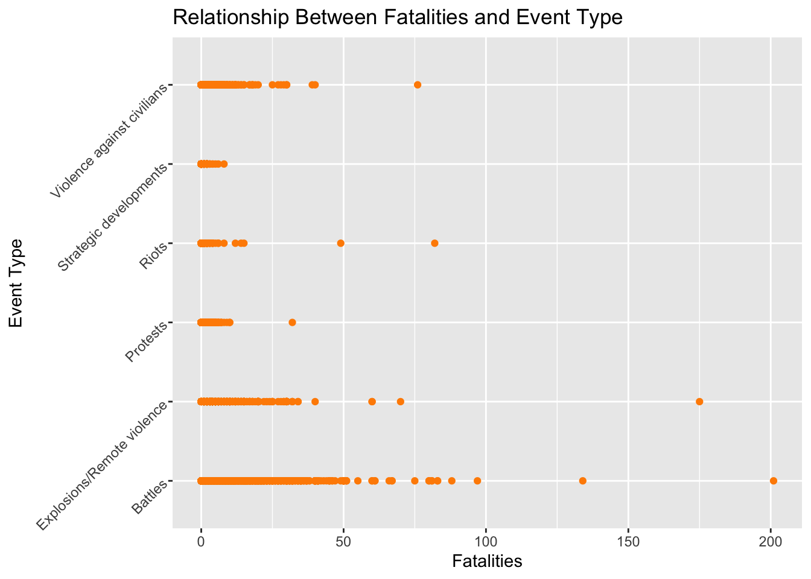
4.1.2 Overall Distribution (Districts)
To further validate our previous observations, we created a choropleth map to visualize the spatial distribution of conflict events. This map confirmed the concentration of conflict activity in the central states.
acled_by_district <- acled_sf %>%
group_by(district) %>%
summarize(event_count = n())
# Join the event count data with the region polygon data
joined_data <- st_join(mym_sf, acled_by_district)
choropleth_m <- tm_shape(joined_data) +
tm_polygons(col = "event_count", style = "jenks", palette = "YlOrRd") +
tm_layout(title = "Event Count")
tmap_arrange(state_m, choropleth_m, asp = 1, ncol = 2)
4.1.3 Event Count by State
The following datatables shows that over the four-year period, Sagaing, Mandalay, and Magway experienced the highest number of conflict events.
summary_table <- acled_sf %>%
st_drop_geometry() %>% # Remove geometry for faster processing
group_by(state) %>%
tally(name = "event_count") %>%
arrange(desc(event_count))
datatable(summary_table)
Selected State
While Sagaing and Mandalay have received significant attention due to their higher levels of conflict and population density, we have chosen to focus our analysis on Magway. This state offers a unique perspective due to its diverse ethnic composition, including Chin, Rakhine, Shan, and Karen populations. By examining Magway, we can gain valuable insights into the potential spillover effects from neighboring conflict zones and conduct a more in-depth analysis of the state’s internal dynamics.
4.2 Viewing the timeline
To understand the temporal dynamics of conflict and its spatial distribution, we will analyze the data for the selected states. Before proceeding, we will partition the conflict and boundary dataframes into three groups: the three states of interest and Magway alone. This separation will allow us to focus on specific regions and analyze their unique characteristics.
# Filter for Magway Surrounding Neigbours
acled_msm_sf <- acled_sf %>%
filter(state %in% c("Magway", "Sagaing", "Mandalay"))
msm_sf <- mym_st_sf %>%
filter(ST %in% c("Magway", "Sagaing", "Mandalay"))
# Filter for "Magway" in both data frames
acled_sf <- acled_sf %>%
filter(state == "Magway")
magway_sf <- mym_sf %>%
filter(ST == "Magway")4.2.1 Histogram of Events (Magway)
From the histogram of event types reveals that the events were initially dominated by protests, the frequency of battles has steadily increased, while protests have declined. Although the overall number of conflict events has shown a general downward trend since its peak in 2022, battles currently constitute the majority of incidents.
ggplot(acled_sf, aes(x = event_date, fill = event_type)) +
geom_histogram(binwidth = 15, position = "stack") +
scale_fill_brewer(palette = "Spectral") +
labs(title = "Stacked Histogram of Event Dates by Event Type",
x = "Event Date",
y = "Count")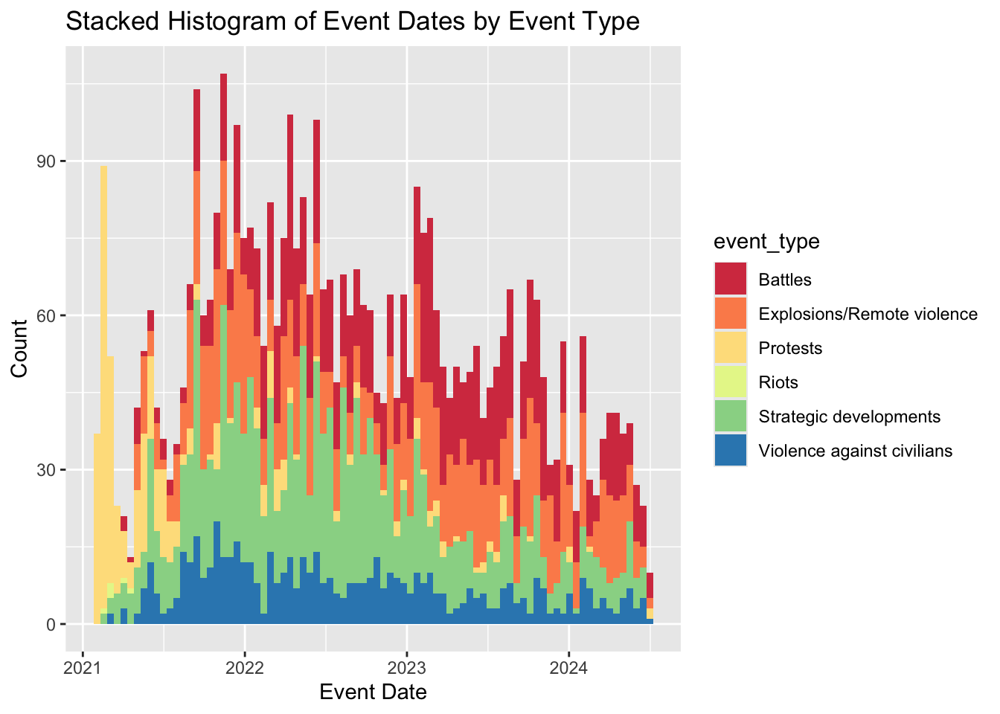
4.2.2 Distribution of Events (Magway)
Our pie charts further validates the observation that protests were more prevalent at the beginning of the time period, while battles have become more frequent in recent months. This shift in the composition of conflict events highlights the evolving dynamics of the conflict.
# Filter data by year
year_acled_sf <- list()
for (yr in 2021:2024) {
year_acled_sf[[yr - 2020]] <- acled_sf %>% filter(year == yr)
}
# Create pie charts for each year
etc_plot <- list()
yr<-0
for (year_acled in year_acled_sf) {
yr<-yr+1
etc_plot[[yr]] <- ggplot(year_acled %>% count(event_type), aes(x = "", y = n, fill = event_type)) +
geom_bar(stat = "identity", color = "white") +
geom_text(aes(label = n), position = position_stack(vjust = 0.5)) +
coord_polar(theta = "y") +
scale_fill_brewer(palette = "Spectral") +
labs(title = as.character(yr+2020)) +
theme_void()
}
# Arrange the charts in a 2x2 grid
grid.arrange(etc_plot[[1]], etc_plot[[2]], etc_plot[[3]], etc_plot[[4]], ncol = 2)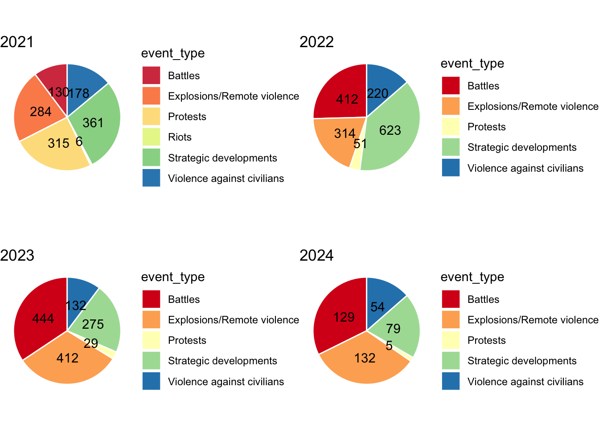
We can also see in following majoritiy of the events occur on the northern border with Sagaing.
magway_plot <- list()
yr<-0
for (year_acled in year_acled_sf) {
yr <- yr + 1
magway_plot[[yr]] <- tm_shape(magway_sf) +
tm_polygons() +
tm_shape(year_acled) +
tm_dots(col = "event_type", alpha = 0.5, size = 0.1, palette = "Spectral") +
tm_layout(title = paste("Events ", as.character(yr + 2020)))
}
tmap_arrange(magway_plot, asp = 2, nrow = 2, ncol = 2)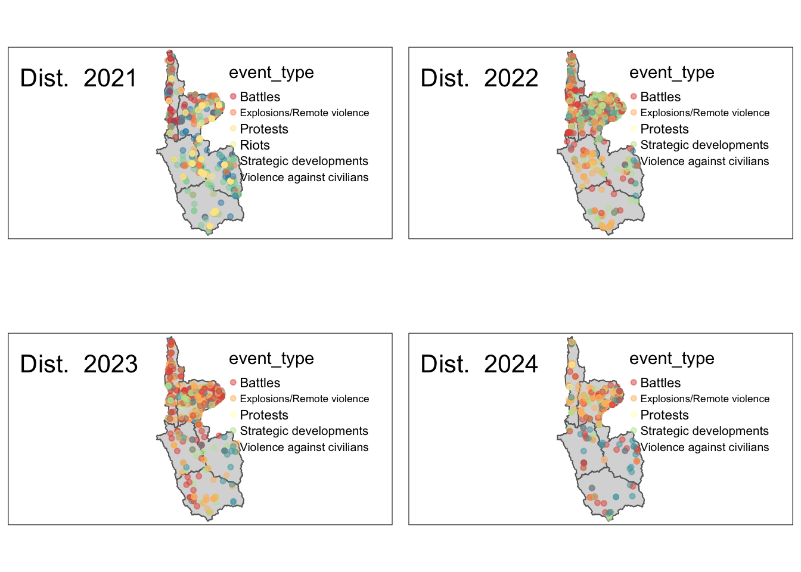
4.3 Event/Fatalities Insights
Our boxplot also suggests that battles are associated with the highest number of fatalities, while protests generally have lower fatality counts.
ggplot(acled_sf, aes(x = event_type, y = fatalities)) +
geom_boxplot(color = "darkorange") +
labs(title = "Relationship Between Fatalities and Event Type",
x = "Event Type",
y = "Fatalities") +
coord_flip() +
theme(axis.text.y = element_text(angle = 45, hjust = 1))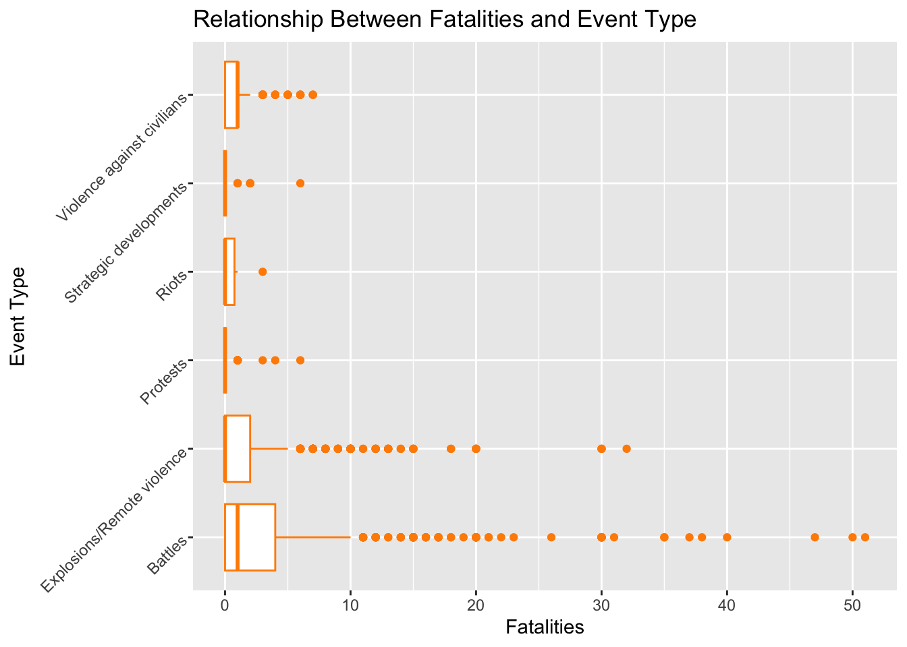
Selection of Event Type
Given the distinct patterns observed in fatalities and the development of event types, we will focus our subsequent analysis on Battles, Explosions, Violence against Civilians, and Protests.
5. Spatial Point Pattern Analysis
To gain a deeper understanding of the conflict dynamics within Magway State, we will examine the spatial distribution and patterns of conflict events. This analysis will provide valuable insights into the concentration of incidents, potential hotspots, and the relationships between conflict and underlying factors.
5.1 Preparation
To streamline our analysis, we have created reusable functions for common tasks. These functions facilitate the conversion of data to ppp format, confinement to specific regions, jittering for spatial randomness, rescaling, and the transformation of KDE results into raster format.
5.1.1 Convert and Rescale
In this function we perform the following: 1. Convert event sf to ppp 2. Convert boundary sf to ppp 3. Jitter any duplicates (If any) 4. Rescale from m to km
rescale_ppp_km <- function(ppp_sf, owin_sf) {
# Converting sf to ppp
ppp <- as.ppp(ppp_sf)
# Converting sf to owin
owin <- as.owin(owin_sf %>% st_union())
# Apply jitter duplicate exist
if (any(duplicated(ppp))) {
ppp <- rjitter(ppp,
retry = TRUE,
nsimm = 1,
drop = TRUE)
}
# Confine and rescale ppp
return(rescale(ppp[owin], 1000, "km"))
}5.1.2 Convert KDE to Raster
kde_to_raster <- function(kde) {
kde_raster <- raster(as.SpatialGridDataFrame.im(kde))
projection(kde_raster) <- CRS("+init=EPSG:32647")
return(kde_raster)
}5.1.3 Prepping PPP
Next lets prep the ppp objects for later use
5.1.3.1 Magway
acled_ppp_km <- rescale_ppp_km(acled_sf, magway_sf)
plot(acled_ppp_km)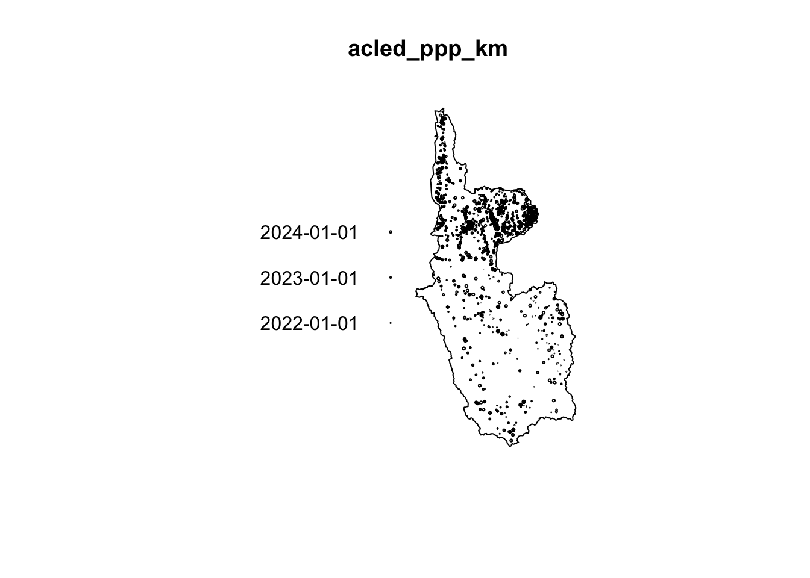
ggplot(data = magway_sf) +
geom_sf(fill = "lightblue") +
geom_sf_label(aes(label = DT), size = 3, repel = TRUE) +
labs(title = "District Boundaries") +
theme_bw()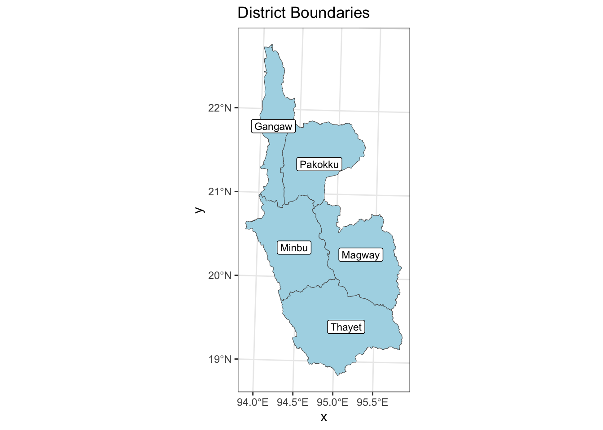
5.1.3.2 Magway, Sagaing & Mandalay
acled_msm_ppp_km <- rescale_ppp_km(acled_msm_sf, msm_sf)
plot(acled_msm_ppp_km)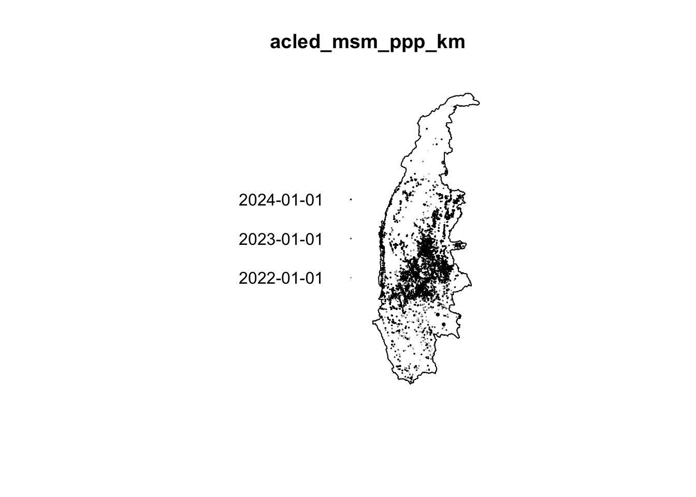
ggplot(data = msm_sf) +
geom_sf(fill = "lightblue") +
geom_sf_label(aes(label = ST), size = 3, repel = TRUE) +
labs(title = "State Boundaries") +
theme_bw()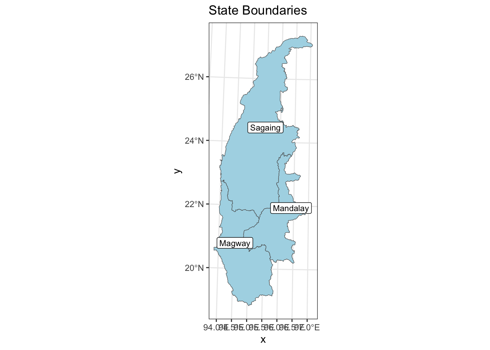
5.2 First Order Analysis
Our initial analysis focuses on visualizing the spatial distribution of conflict events on inter-state, state and district level, across the time and event types using the density from the Spatstat package to derive the kernel density of area of study
5.2.1 Picking a Density BW
We will be starting with finding a suitable Bandwidth for our data. As the area of study is large, making point events sparse, the bandwidth needs to be carefully considered for the best representation.
acled_ppp_kde_ppl = density(acled_ppp_km,
sigma = bw.ppl,
edge = TRUE,
kernel = "gaussian")
plot(acled_ppp_kde_ppl, main = "PPL bandwidth")acled_ppp_kde_scott = density(acled_ppp_km,
sigma = bw.scott,
edge = TRUE,
kernel = "gaussian")
plot(acled_ppp_kde_scott, main = "Scott bandwidth")acled_ppp_kde_adaptive <- adaptive.density(acled_ppp_km, method="kernel")
plot(acled_ppp_kde_adaptive, main = "Adaptive bandwidth")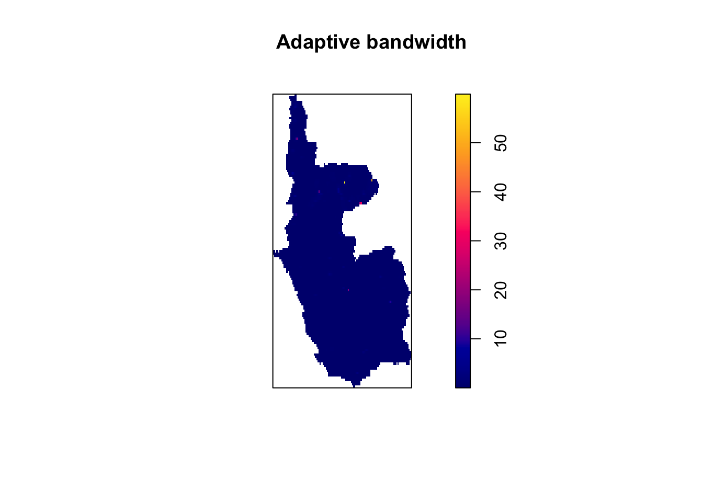
acled_ppp_kde_man = density(acled_ppp_km,
sigma = 10,
edge = TRUE,
kernel = "gaussian")
plot(acled_ppp_kde_man, main = "Manual bandwidth (10km)")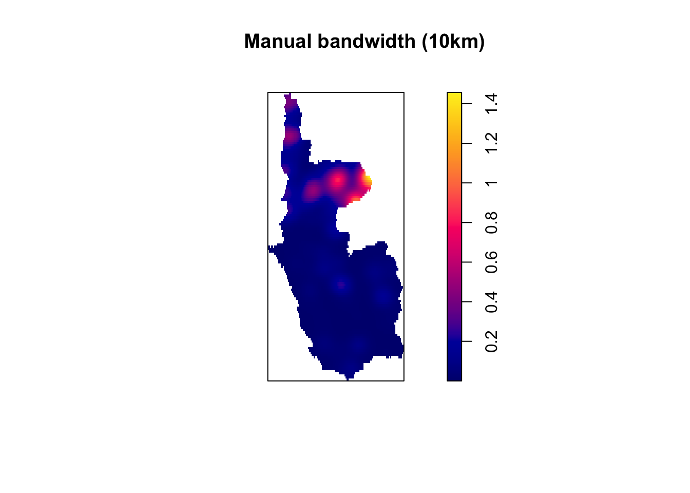
Given the relatively sparse distribution of points within our study area, a manual bandwidth of 10km is deemed appropriate for the kernel density estimation. This bandwidth setting provides a suitable balance between capturing spatial patterns and avoiding excessive smoothing
5.2.2 Inter-state Spatial Relations
To understand the potential influence of neighboring states on conflict dynamics within Magway, we will conduct a spatial analysis using a bandwidth of 15km, reflecting the larger geographical extent involved. This analysis will help us identify any spillover effects or sequential patterns of conflict across borders.
kde_results <- list()
for (yr in 2021:2024) {
acled_msm_ppp_km <- rescale_ppp_km(acled_msm_sf %>% filter(year == yr), msm_sf)
acled_msm_ppp_kde <- density(acled_msm_ppp_km, sigma = 15, edge = TRUE, kernel = "gaussian")
kde_results[[yr - 2020]] <- acled_msm_ppp_kde
}
par(mfrow=c(1,5), mar=c(1,1,1,1))
yr <- 2020
for (res in kde_results) {
yr <- yr + 1
plot(res, main = as.character(yr))
}
plot(st_geometry(msm_sf), col = "lightblue", main = "State")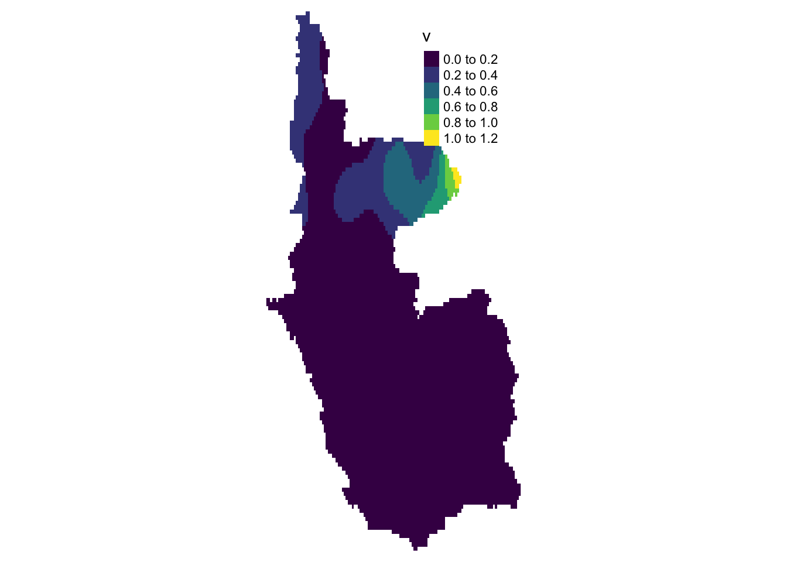
Observation
Notice the initial clusters forming in Mandalay. Subsequently, the clusters within Sagaing expanded towards the border between with Magway, eventually spilling over into Magway. Suggesting a strong influence of neighboring regions on conflict dynamics within Magway.
5.2.3 State Analysis (Magway)
Next we will delve into the state level, by exploring spatial patterns within Magway’s districts, we can identify areas of high concentration, potential hotspots, and the evolution of conflict over quarter
5.2.3.1 Quarterly KDE (Magway)
At a closer look we can observe the events tend to form hotspots closer to the border with Sagaing.
unique_quarters <- unique(acled_sf$quarter) %>% sort()
# Create an empty list to store KDE results
quart_kde_results <- list()
# Iterate through unique quarters
q <- 0
for (quart in unique_quarters) {
q <- q + 1
acled_ppp_km <- rescale_ppp_km(acled_sf %>% filter(quarter == quart), magway_sf)
acled_ppp_kde <- density(acled_ppp_km, sigma = 15, edge = TRUE, kernel = "gaussian")
quart_kde_results[[q]] <- acled_ppp_kde
}
par(mfrow=c(4,4), mar=c(1,1,1,1))
# Create a data frame for plotting
i <- 0
for (res in quart_kde_results) {
i <- i + 1
r <- ifelse(i %% 4 == 0, 4, i %% 4)
plot(res,
override.par = F,
fix.range = T,
main = paste(as.character(2021+as.integer((i-1)/4)), "Q", r))
}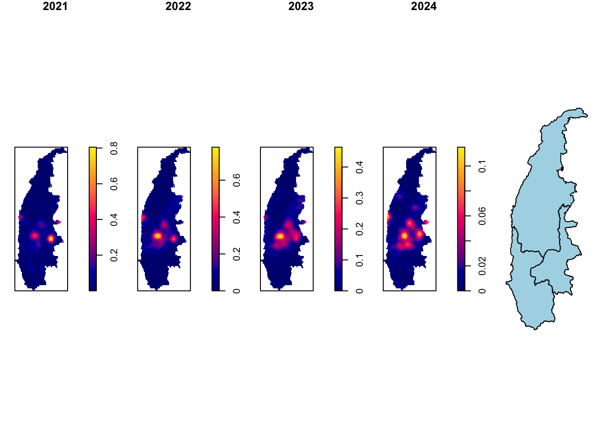
5.2.3.2 Summary by district
The following are the summary statistics of the districts in Magway by Year, Event type and Year-Event type. Of all districts the one worst affected is Pakokku
# Group by district, year, and event_type, then count events
acled_grouped <- acled_sf %>%
st_drop_geometry() %>%
group_by(district, year) %>%
summarize(count = n()) %>%
pivot_wider(names_from = year, values_from = count, values_fill = 0)
# Create a data table
datatable(acled_grouped)# Group by district, year, and event_type, then count events
acled_grouped <- acled_sf %>%
st_drop_geometry() %>%
group_by(district, event_type) %>%
summarize(count = n()) %>%
pivot_wider(names_from = event_type, values_from = count, values_fill = 0)
# Create a data table
datatable(acled_grouped)# Group by district, year, and event_type, then count events
acled_grouped <- acled_sf %>%
st_drop_geometry() %>%
group_by(district, year, event_type) %>%
summarize(count = n()) %>%
pivot_wider(names_from = c(year, event_type), values_from = count, values_fill = 0)
# Create a data table
datatable(acled_grouped)5.2.4 District Analysis (Pakokku)
Given the severe nature of conflict in Pakokku, we will focus our subsequent analysis on this district. By examining Pakokku in detail, we can gain valuable insights into the factors driving intense conflict.
5.2.4.1 Prepare Pakokku sf
# Filter for "Pakokku" in both data frames
acled_pak_sf <- acled_sf %>%
filter(district == "Pakokku")
magway_pak_sf <- mym_sf %>%
filter(DT == "Pakokku")5.2.4.1 Quadrant Count
Splitting Pakokku into 10x10, we can start by looking a the Quadrat count of where the events mostly occur, in this case we can obseve higher counts in the center as well as long the eastern boundary.
acled_ppp_km <- rescale_ppp_km(acled_pak_sf %>% dplyr::select(year, geometry), magway_pak_sf)
quadrat_counts <- quadratcount(acled_ppp_km, nx=10, ny=10)
plot(quadrat_counts, main = "Quadrat Counts")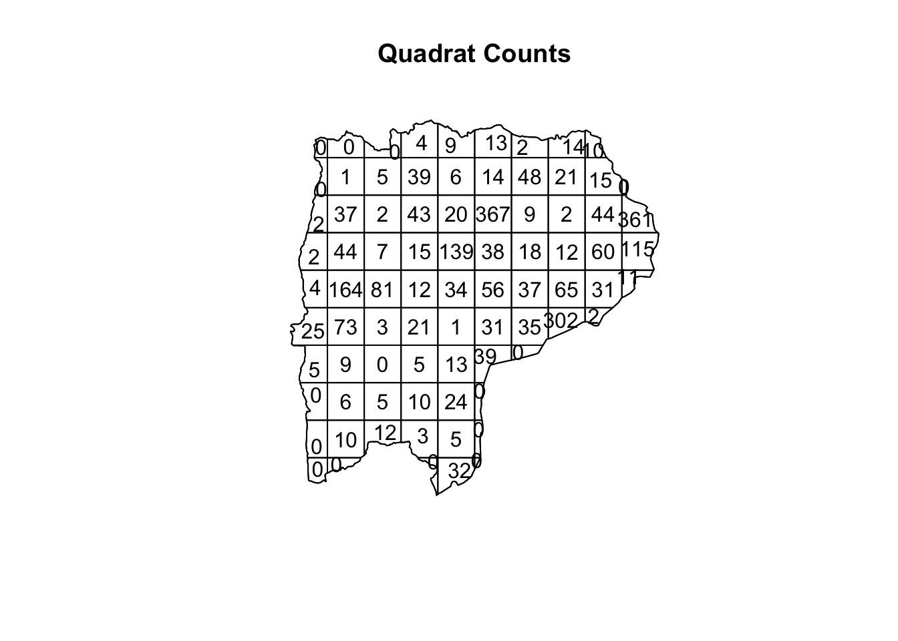
5.2.4.2 Yearly Event Type KDE (Pakokku)
Here we compare the event types over the years in Pakokku, each row representing an event type: 1. Protests 2. Explosions/Remote violence 3. Battles 4. Violence against civilians
et_kde_results <- list()
event_types <- list("Protests", "Explosions/Remote violence", "Battles", "Violence against civilians")
q <- 0
# Iterate through the list
for (et in event_types) {
for (yr in 2021:2024) {
q <- q + 1
acled_ppp_km <- rescale_ppp_km(acled_pak_sf %>% filter(year == yr & event_type == et), magway_pak_sf)
acled_ppp_kde <- density(acled_ppp_km, sigma = 5, edge = TRUE, kernel = "gaussian")
et_kde_results[[q]] <- acled_ppp_kde
}
}
# TODO: same as above replot
par(mfrow=c(4,4), mar=c(1,1,1,2))
# Create a data frame for plotting
i <- 0
for (res in et_kde_results) {
i <- i + 1
r <- ifelse(i %% 4 == 0, 4, i %% 4)
plot(res, main = as.character(2020 + r))
}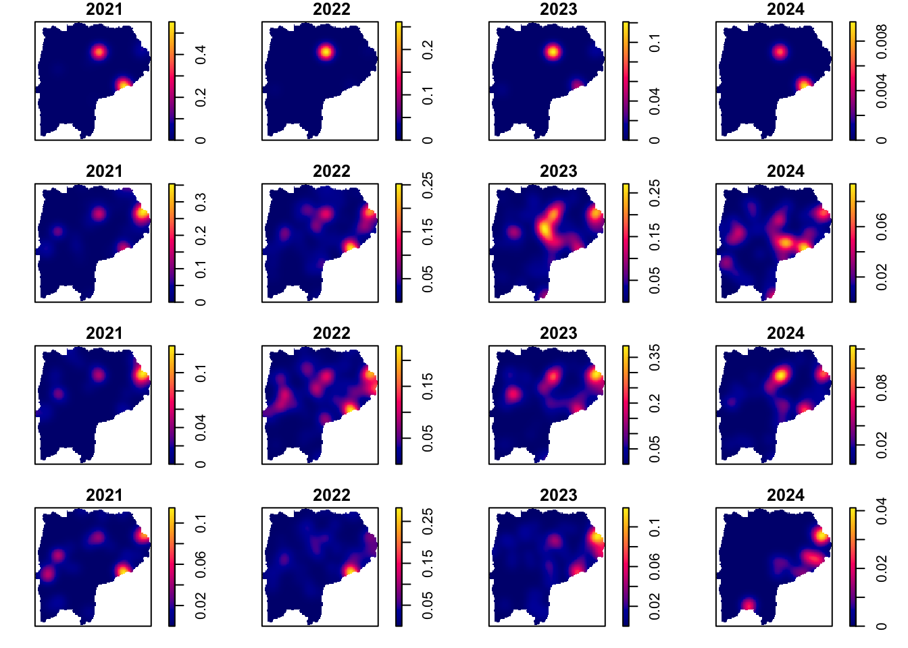
Event Type Findings
- Protests tend to be concentrated in urban areas
- Explosions and battles frequently occur near the outskirts of the city and towns
- Violence against civilians, on the other hand, is primarily concentrated in rural areas outside the city boundaries.
5.3 Second Order Analysis
To gain a deeper understanding of the spatial distribution of conflict events within Pakokku, we will conduct a second-order spatial analysis using the Clark-Evans test and Ripley’s K function. Before delving into these analyses, let’s examine the types of events that occurred in Pakokku across different quarters.
# Group by district, year, and event_type, then count events
acled_pak_grouped <- acled_pak_sf %>%
st_drop_geometry() %>%
group_by(event_type, quarter) %>%
summarize(count = n()) %>%
pivot_wider(names_from = quarter, values_from = count, values_fill = 0, names_sort = TRUE)
# Create a data table
datatable(acled_pak_grouped)5.3.1 Clark Evan Test
By employing the Clark-Evans test, we can assess whether the spatial distribution of conflict events within Pakokku deviates from complete spatial randomness. This analysis will help us identify any clustering or dispersion patterns that may exist. - H0: The distribution of events in Pakokku are randomly distributed. - H1: The distribution of events in Pakokku are not randomly distributed. - The 95% confident interval will be used.
# Iterate through the list
clarkevans.test(rescale_ppp_km(acled_pak_sf %>% filter(event_type == "Protests"), magway_pak_sf),
correction = "none",
alternative = c("clustered"),
nsim = 999)
Clark-Evans test
No edge correction
Z-test
data: rescale_ppp_km(acled_pak_sf %>% filter(event_type == "Protests"),
R = 0.092082, p-value < 2.2e-16
alternative hypothesis: clustered (R < 1)Protests: R < 1 which suggest clustering. p-value < 0.05, H0 can be rejected.
# Iterate through the list
clarkevans.test(rescale_ppp_km(acled_pak_sf %>% filter(event_type == "Explosions/Remote violence"), magway_pak_sf),
correction = "none",
alternative = c("clustered"),
nsim = 999)
Clark-Evans test
No edge correction
Z-test
data: rescale_ppp_km(acled_pak_sf %>% filter(event_type == "Explosions/Remote violence"),
R = 0.36424, p-value < 2.2e-16
alternative hypothesis: clustered (R < 1)Explosions/Remote violence: R < 1 which suggest clustering. p-value < 0.05, H0 can be rejected.
# Iterate through the list
clarkevans.test(rescale_ppp_km(acled_pak_sf %>% filter(event_type == "Battles"), magway_pak_sf),
correction = "none",
alternative = c("clustered"),
nsim = 999)
Clark-Evans test
No edge correction
Z-test
data: rescale_ppp_km(acled_pak_sf %>% filter(event_type == "Battles"),
R = 0.34248, p-value < 2.2e-16
alternative hypothesis: clustered (R < 1)Battles: R < 1 which suggest clustering. p-value < 0.05, H0 can be rejected.
# Iterate through the list
clarkevans.test(rescale_ppp_km(acled_pak_sf %>% filter(event_type == "Violence against civilians"), magway_pak_sf),
correction = "none",
alternative = c("clustered"),
nsim = 999)
Clark-Evans test
No edge correction
Z-test
data: rescale_ppp_km(acled_pak_sf %>% filter(event_type == "Violence against civilians"),
R = 0.50772, p-value < 2.2e-16
alternative hypothesis: clustered (R < 1)Violence against civilians: R < 1 which suggest clustering. p-value < 0.05, H0 can be rejected.
Understanding High Clustering
- Increased Intensity: Clusters of conflict events often indicate areas of heightened intensity. Concentrated violence can lead to greater casualties, displacement, and destruction of infrastructure.
- Strategic Considerations: Armed groups may strategically target specific areas for tactical advantages or to exert control over key resources.
- Spillover Effects: High clustering in one area can increase the risk of conflict spreading to neighboring regions. This is especially true if the conflict involves armed groups with territorial ambitions.
Given the observed shift from protests to battles over time, I am particularly interested in exploring the relationship between these two types of events. We will be using this 2 events for our subsequent analysis.
5.3.2 G Function Analysis
To better appreciate the clustering we can start by visualizing on G function help us identify any clustering or dispersion patterns that may exist, providing valuable insights into the underlying dynamics of conflict in the region. Subsequently we will also be using the other variants of the Ripley’s K Function to determine spatial auto correlations, here are their uses: - G function: Measures the probability of finding a point within a given distance of another point. - K function: Measures the average number of points within a given distance of a randomly chosen point. - L function: A transformation of the K function that makes it easier to interpret. - F function: Measures the distribution of distances between pairs of points.
acled_ppp_km <- rescale_ppp_km(acled_pak_sf %>% filter(year == 2021 & event_type == "Battles"), magway_pak_sf)
G.csr <- envelope(acled_ppp_km, Gest, nsim = 999)Generating 999 simulations of CSR ...
1, 2, 3, ......10.........20.........30.........40.........50.........60..
.......70.........80.........90.........100.........110.........120.........130
.........140.........150.........160.........170.........180.........190........
.200.........210.........220.........230.........240.........250.........260......
...270.........280.........290.........300.........310.........320.........330....
.....340.........350.........360.........370.........380.........390.........400..
.......410.........420.........430.........440.........450.........460.........470
.........480.........490.........500.........510.........520.........530........
.540.........550.........560.........570.........580.........590.........600......
...610.........620.........630.........640.........650.........660.........670....
.....680.........690.........700.........710.........720.........730.........740..
.......750.........760.........770.........780.........790.........800.........810
.........820.........830.........840.........850.........860.........870........
.880.........890.........900.........910.........920.........930.........940......
...950.........960.........970.........980.........990........
999.
Done.plot(G.csr, xlab = "Dist (km)", ylab = "G(r)", main = "G-Function (Battles)", lwd = 2, cex.axis = 1.2)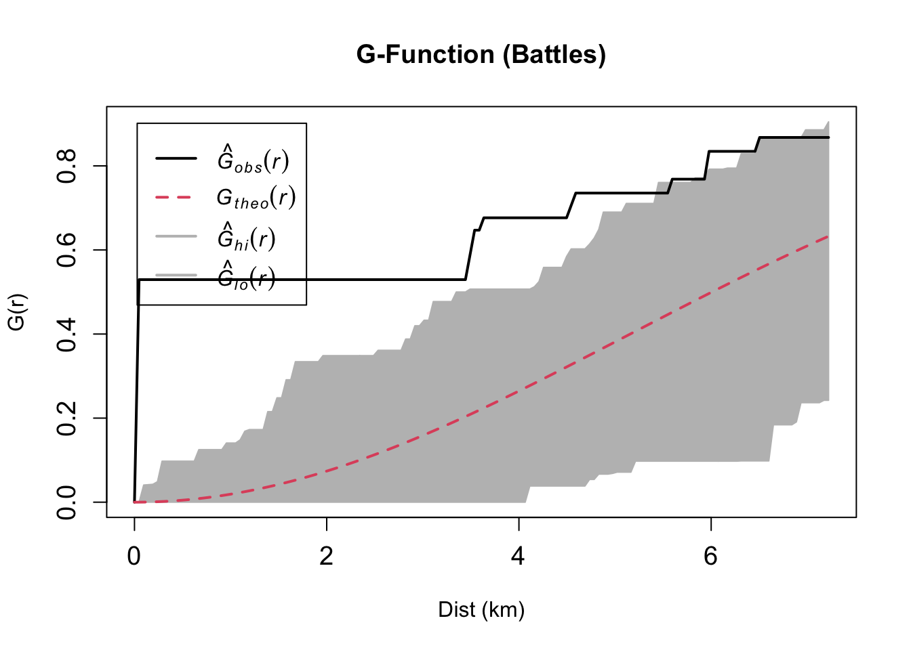
These observations suggest that there is a strong tendency for points to cluster within a distance of 6km. The rapid increase in the G function at shorter distances indicates a high degree of clustering within the first 6km. However, the slower increase beyond 8km suggests that the clustering effect might be weakening at larger distances.
acled_ppp_km <- rescale_ppp_km(acled_pak_sf %>% filter(year == 2021 & event_type == "Protests"), magway_pak_sf)
G.csr <- envelope(acled_ppp_km, Gest, nsim = 999)Generating 999 simulations of CSR ...
1, 2, 3, ......10.........20.........30.........40.........50.........60..
.......70.........80.........90.........100.........110.........120.........130
.........140.........150.........160.........170.........180.........190........
.200.........210.........220.........230.........240.........250.........260......
...270.........280.........290.........300.........310.........320.........330....
.....340.........350.........360.........370.........380.........390.........400..
.......410.........420.........430.........440.........450.........460.........470
.........480.........490.........500.........510.........520.........530........
.540.........550.........560.........570.........580.........590.........600......
...610.........620.........630.........640.........650.........660.........670....
.....680.........690.........700.........710.........720.........730.........740..
.......750.........760.........770.........780.........790.........800.........810
.........820.........830.........840.........850.........860.........870........
.880.........890.........900.........910.........920.........930.........940......
...950.........960.........970.........980.........990........
999.
Done.plot(G.csr, xlab = "Dist (km)", ylab = "G(r)", main = "G-Function (Protests)", lwd = 2, cex.axis = 1.2)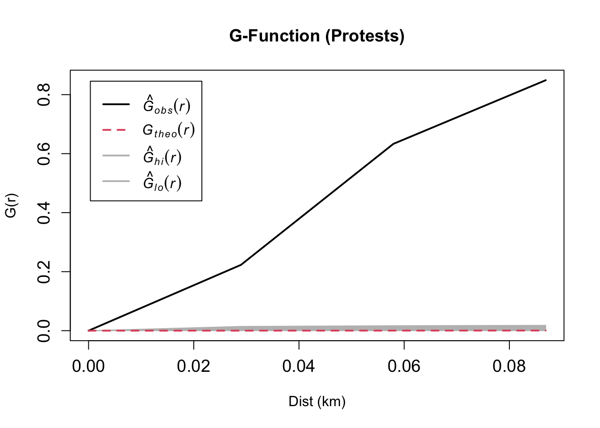
The observed G function steadily increasing suggests a clustering pattern for protests. This means that the probability of finding another protest within a given distance of a protest increases as the distance increases. Unlike battles which often involve larger-scale operations that can extend over wider areas, Protests tend to be more localized events, often concentrated in specific areas or near particular targets. This is why the G function for battles might have a larger range, indicating that points (events) can be found at greater distances from each other.
5.3.3 K-Function Analysis
To ensure our observation is consistent we will use K Function to provide further insights into the spatial distribution of conflict events and help confirm our findings from the G function.
acled_ppp_km <- rescale_ppp_km(acled_pak_sf %>% filter(year == 2021 & event_type == "Battles"), magway_pak_sf)
K.csr <- envelope(acled_ppp_km, Kest, nsim = 50)Generating 50 simulations of CSR ...
1, 2, 3, 4, 5, 6, 7, 8, 9, 10, 11, 12, 13, 14, 15, 16, 17, 18, 19, 20,
21, 22, 23, 24, 25, 26, 27, 28, 29, 30, 31, 32, 33, 34, 35, 36, 37, 38, 39, 40,
41, 42, 43, 44, 45, 46, 47, 48, 49,
50.
Done.plot(K.csr, xlab = "Dist (km)", ylab = "K(r)", main = "K-Function (Battles)", lwd = 2, cex.axis = 1.2)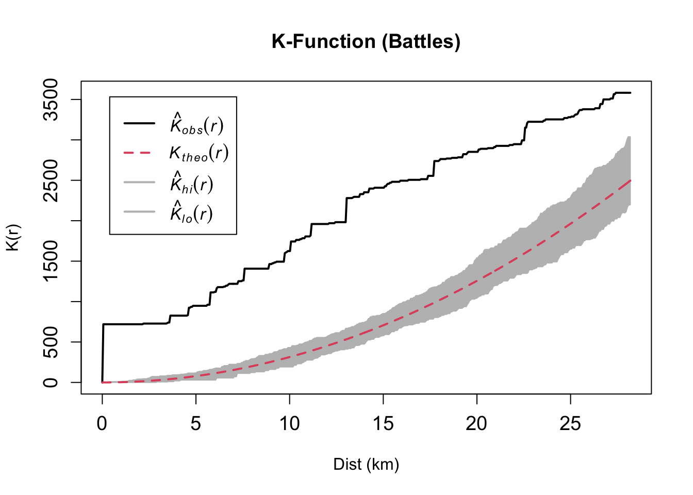
Similarly here we can observe the strong tendency for points to cluster on the on start up until 20+ km as it slowly converges with the envelope toward 25 km
acled_ppp_km <- rescale_ppp_km(acled_pak_sf %>% filter(year == 2021 & event_type == "Protests"), magway_pak_sf)
K.csr <- envelope(acled_ppp_km, Kest, nsim = 50)Generating 50 simulations of CSR ...
1, 2, 3, 4, 5, 6, 7, 8, 9, 10, 11, 12, 13, 14, 15, 16, 17, 18, 19, 20,
21, 22, 23, 24, 25, 26, 27, 28, 29, 30, 31, 32, 33, 34, 35, 36, 37, 38, 39, 40,
41, 42, 43, 44, 45, 46, 47, 48, 49,
50.
Done.plot(K.csr, xlab = "Dist (km)", ylab = "K(r)", main = "K-Function (Protests)", lwd = 2, cex.axis = 1.2)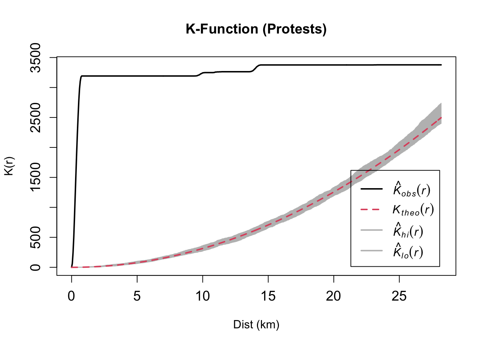
The K function for protest potrays even more pronounced clustering pattern for protests. The K function indicates a highly localized and intense concentration of protest events within a small radius.
From the above observation we can confirm that our findings from
Understanding Ripley’s K Function
- The solid line represents the observed K function. - If K(r) is above the envelope, it indicates clustering (points are closer together than expected by chance). - If K(r) is below the envelope, it indicates dispersion (points are farther apart than expected by chance). - If K(r) is within the envelope, it suggests a random pattern.
- Envelope: The envelope is generated by simulating random point patterns under the assumption of CSR. If the observed K function falls outside the envelope, it suggests a significant deviation from randomness.
- Dotted line through the center: This line represents the theoretical K function under complete spatial randomness. It serves as a benchmark for comparison with the observed K function.
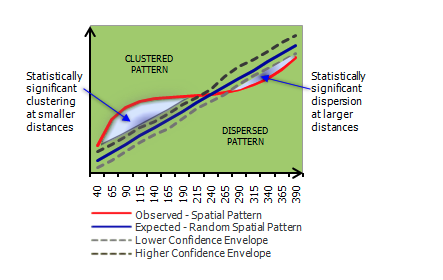
5.3.3 L-Function Analysis
To view the K-Function more intuitively we will employ the L function. This transformation of the K function will provide a clearer visualization of the clustering patterns observed in the data.
acled_ppp_km <- rescale_ppp_km(acled_pak_sf %>% filter(year == 2021 & event_type == "Battles"), magway_pak_sf)
L.csr <- envelope(acled_ppp_km, Lest, nsim = 50)Generating 50 simulations of CSR ...
1, 2, 3, 4, 5, 6, 7, 8, 9, 10, 11, 12, 13, 14, 15, 16, 17, 18, 19, 20,
21, 22, 23, 24, 25, 26, 27, 28, 29, 30, 31, 32, 33, 34, 35, 36, 37, 38, 39, 40,
41, 42, 43, 44, 45, 46, 47, 48, 49,
50.
Done.plot(L.csr , . - r ~ r, xlab="Dist (km)", ylab="L(r)-r", main = "L-Function (Battles)", lwd = 2, cex.axis = 1.2)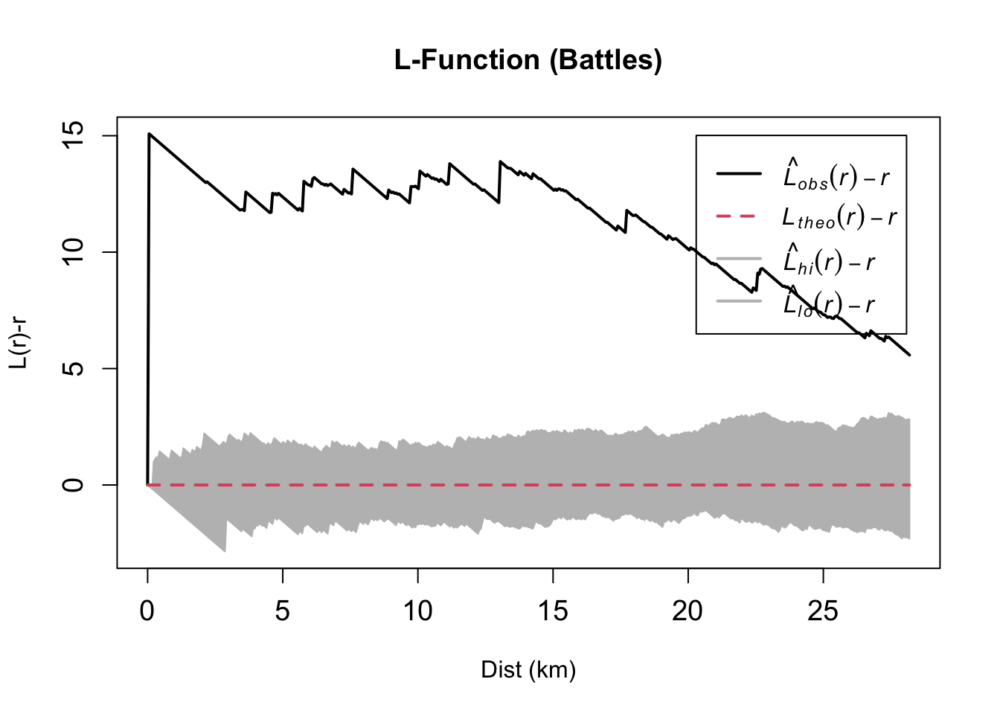
acled_ppp_km <- rescale_ppp_km(acled_pak_sf %>% filter(year == 2021 & event_type == "Protests"), magway_pak_sf)
L.csr <- envelope(acled_ppp_km, Lest, nsim = 50)Generating 50 simulations of CSR ...
1, 2, 3, 4, 5, 6, 7, 8, 9, 10, 11, 12, 13, 14, 15, 16, 17, 18, 19, 20,
21, 22, 23, 24, 25, 26, 27, 28, 29, 30, 31, 32, 33, 34, 35, 36, 37, 38, 39, 40,
41, 42, 43, 44, 45, 46, 47, 48, 49,
50.
Done.plot(L.csr , . - r ~ r, xlab="Dist (km)", ylab="L(r)-r", main = "L-Function (Protests)", lwd = 2, cex.axis = 1.2)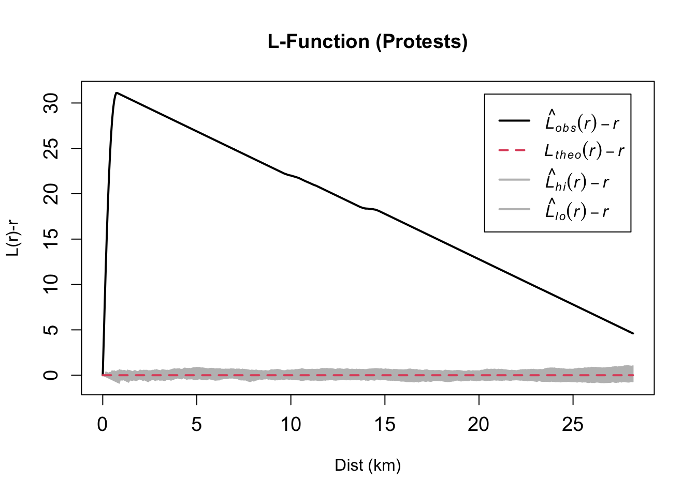
5.3.4 F-Function Analysis
To further validate our observation, we will employ the F function as complementary analysis. Which measures the distribution of distances between pairs of points.
acled_ppp_km <- rescale_ppp_km(acled_pak_sf %>% filter(year == 2021 & event_type == "Battles"), magway_pak_sf)
K.csr <- envelope(acled_ppp_km, Fest, nsim = 999)Generating 999 simulations of CSR ...
1, 2, 3, ......10.........20.........30.........40.........50.........60..
.......70.........80.........90.........100.........110.........120.........130
.........140.........150.........160.........170.........180.........190........
.200.........210.........220.........230.........240.........250.........260......
...270.........280.........290.........300.........310.........320.........330....
.....340.........350.........360.........370.........380.........390.........400..
.......410.........420.........430.........440.........450.........460.........470
.........480.........490.........500.........510.........520.........530........
.540.........550.........560.........570.........580.........590.........600......
...610.........620.........630.........640.........650.........660.........670....
.....680.........690.........700.........710.........720.........730.........740..
.......750.........760.........770.........780.........790.........800.........810
.........820.........830.........840.........850.........860.........870........
.880.........890.........900.........910.........920.........930.........940......
...950.........960.........970.........980.........990........
999.
Done.plot(K.csr, xlab = "Dist (km)", ylab = "F(r)", main = "F-Function (Battles)", lwd = 2, cex.axis = 1.2)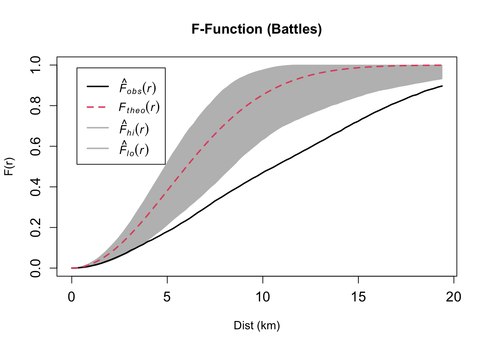
This suggests that the observed distances between points are smaller than expected under complete spatial randomness. In other words, there is evidence of clustering in the data. The degree of clustering can be assessed by how far below the dotted line the F function curve lies.
acled_ppp_km <- rescale_ppp_km(acled_pak_sf %>% filter(year == 2021 & event_type == "Protests"), magway_pak_sf)
K.csr <- envelope(acled_ppp_km, Fest, nsim = 999)Generating 999 simulations of CSR ...
1, 2, 3, ......10.........20.........30.........40.........50.........60..
.......70.........80.........90.........100.........110.........120.........130
.........140.........150.........160.........170.........180.........190........
.200.........210.........220.........230.........240.........250.........260......
...270.........280.........290.........300.........310.........320.........330....
.....340.........350.........360.........370.........380.........390.........400..
.......410.........420.........430.........440.........450.........460.........470
.........480.........490.........500.........510.........520.........530........
.540.........550.........560.........570.........580.........590.........600......
...610.........620.........630.........640.........650.........660.........670....
.....680.........690.........700.........710.........720.........730.........740..
.......750.........760.........770.........780.........790.........800.........810
.........820.........830.........840.........850.........860.........870........
.880.........890.........900.........910.........920.........930.........940......
...950.........960.........970.........980.........990........
999.
Done.plot(K.csr, xlab = "Dist (km)", ylab = "F(r)", main = "F-Function (Protests)", lwd = 2, cex.axis = 1.2)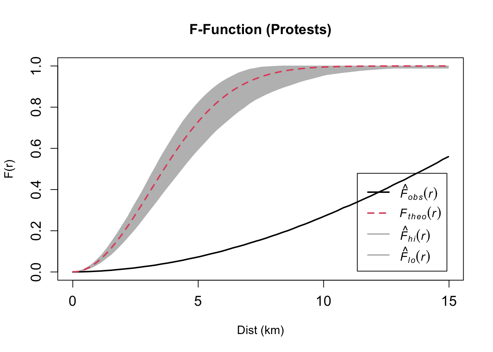
Similar observation as with Battles but with a more less steep observation line, indicating more intense clustering.
6. Spatial-Temporal Analysis
With our previous findings on clustering with Pakokku, we spatial temporal distribution of events across the district and examine how these patterns evolve over time. This analysis will help us identify specific areas of concentration and potential hotspots, as well as understand the temporal changes in conflict activity.
6.1 Overview by Quarter
tm_shape(magway_pak_sf) + tm_polygons() +
tm_shape(acled_pak_sf) + tm_dots(size = 0.1, alpha = 0.5, col = "red") +
tm_facets(by="quarter",
free.coords = F,
drop.units = T)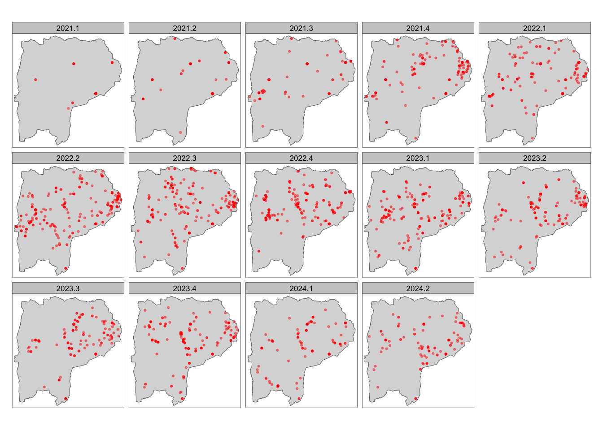
6.2 Compute ST Density by Event_type
We start by preparing our sf with our quarter id to be used with the spattemp.density of the sparr for our spatial temporal analysis.
acled_pak_sf <- acled_pak_sf %>%
mutate(quarter_id = ((year - 2021) * 4) + ((quarter %% 1) * 10))pak_ppp_owin <- rescale_ppp_km(acled_pak_sf %>% filter(event_type == "Battles") %>% dplyr::select(quarter_id, geometry), magway_pak_sf)
st_kde <- sparr::spattemp.density(pak_ppp_owin)
summary(st_kde)Spatiotemporal Kernel Density Estimate
Bandwidths
h = 8.5989 (spatial)
lambda = 0.088 (temporal)
No. of observations
677
Spatial bound
Type: polygonal
2D enclosure: [8.367469, 121.1188] x [2310.08, 2425.057]
Temporal bound
[2, 15]
Evaluation
128 x 128 x 14 trivariate lattice
Density range: [2.248839e-36, 0.0005999062]tims <- seq(2, 14)
par(mfcol = c(4,4), mar = c(2, 2, 2, 2))
for(i in tims) {
plot(st_kde, i,
override.par = F,
fix.range = F,
main=paste("KDE: ",i))
}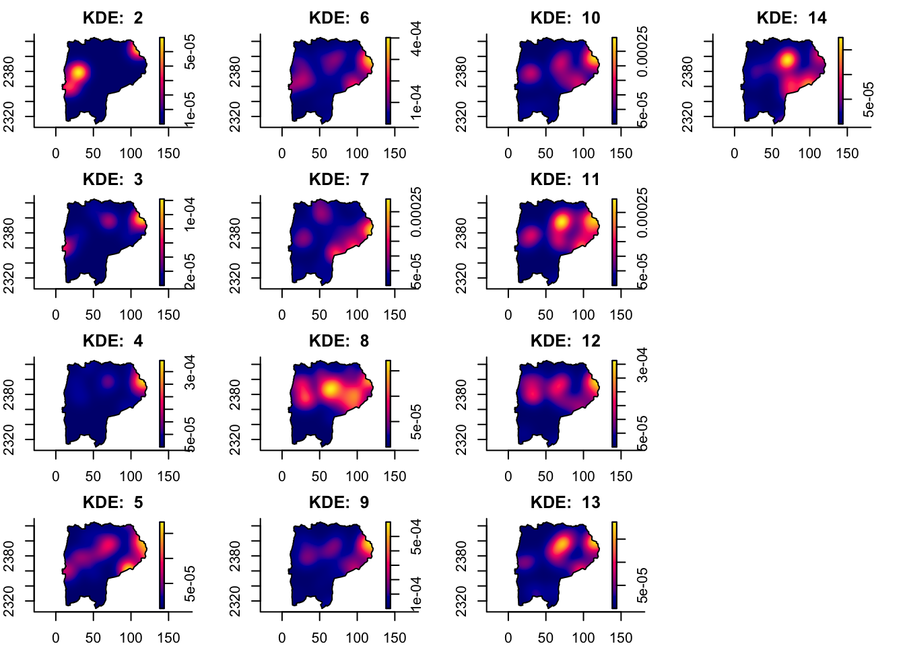
We can observe over the quarters (less 2021 Q1) the Battles are spread out around the northern sector of Pakokku
pak_ppp_owin <- rescale_ppp_km(acled_pak_sf %>% filter(event_type == "Protests") %>% dplyr::select(quarter_id, geometry), magway_pak_sf)
st_kde <- sparr::spattemp.density(pak_ppp_owin)
summary(st_kde)Spatiotemporal Kernel Density Estimate
Bandwidths
h = 6.7531 (spatial)
lambda = 0.0836 (temporal)
No. of observations
212
Spatial bound
Type: polygonal
2D enclosure: [8.367469, 121.1188] x [2310.08, 2425.057]
Temporal bound
[0, 15]
Evaluation
128 x 128 x 16 trivariate lattice
Density range: [3.261449e-77, 0.004421199]tims <- seq(2, 14)
par(mfcol = c(4,4), mar = c(2, 2, 2, 2))
for(i in tims) {
plot(st_kde, i,
override.par = F,
fix.range = F,
main=paste("KDE: ",i))
}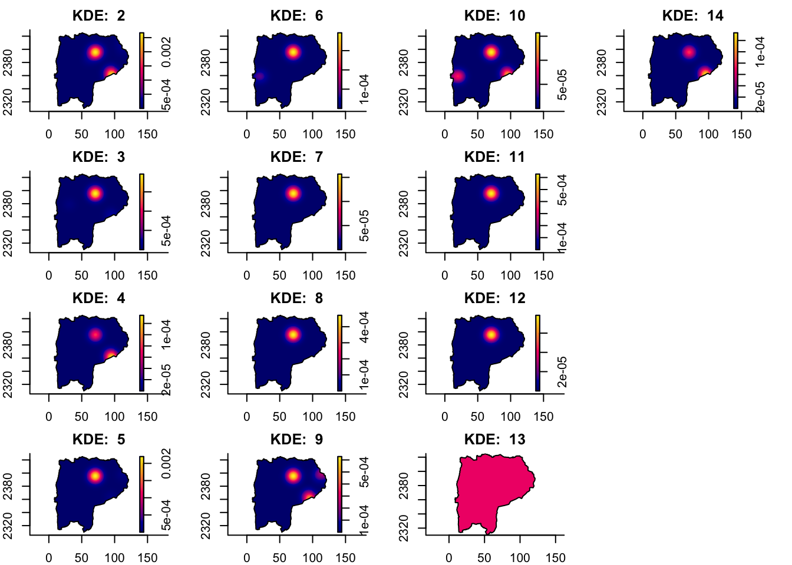
Whereas the Protests is observed to remain localized and consistent in towns and cities.
6.3 Animating Events (Battles)
The Spatial Temporal Diffusion for Battles is animated with the following code, which generates and MP4, subsequently converted into a Gif
#! ouptput: false
# pak_ppp_owin <- rescale_ppp_km(acled_pak_sf %>% filter(event_type == "Battles") %>% dplyr::select(quarter_id, geometry), magway_pak_sf)
# hlam <- LIK.spattemp(pak_ppp_owin)
# f.breve <- spattemp.density(pak_ppp_owin, h=hlam[1], lambda=hlam[2], tlim=c(1,14))
# g.tilde <- bivariate.density(pak_ppp_owin, h0=hlam[1])
# rho.breve <- spattemp.risk(f=f.breve,g=g.tilde, tolerate=TRUE)
# colpal <- spatstat.options("image.colfun")
# fmdcolours <- colourmap(colpal(128),breaks=c(-80,seq(-7,4,length=128)))
# mytimes <- 1:14
# animation::saveVideo(
# for(i in 1:length(mytimes)){
# plot(rho.breve,tselect=mytimes[i],type="conditional",col=fmdcolours,
# tol.args=list(levels=c(0.05,0.0001),lty=2:1,drawlabels=FALSE),
# sleep=0,override.par=FALSE)
# title(xlab="Easting",ylab="Northing")
# },
# video.name="fmd_protests.mp4", other.opts = '-b:v 1M -pix_fmt yuv420p', ani.width=640, ani.height=640, interval=1/4)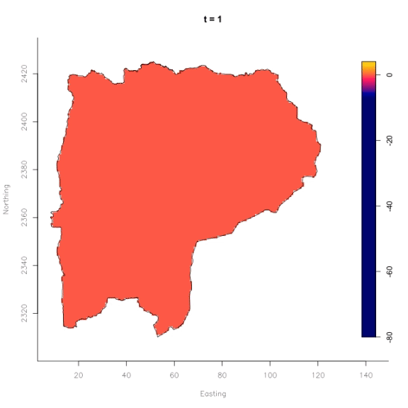
Note
The above code chunk is commented to prevent execution as it requires ffmpeg tool for running. Ensure you have the tool installed before running.
7. Interpretation
After gathering the insights from our previous analysis, we will integrate OpenStreetMap (OSM) data and explore the temporal relationships within our dataset.
7.1 Visualizing conflicts on OSM
For our OSM dimensions we will be working with the places layers which consists of towns and cities as well as the places of worship (POW). The data are retrieved from geofabrik for Myanmmar.
7.1.1 Prepping OSM Data
OSM data is loaded and crs transformed.
osm_sf = st_read("data/geospatial/myanmar-latest-free.shp.zip", layer="gis_osm_places_a_free_1") %>%
st_transform(crs = 32647)Reading layer `gis_osm_places_a_free_1' from data source
`/Users/jeffery/Projects/Y4S1/IS415/S0methingSimple/IS415-GAA/take-home_ex/ex01/data/geospatial/myanmar-latest-free.shp.zip'
using driver `ESRI Shapefile'
Simple feature collection with 10489 features and 5 fields
Geometry type: MULTIPOLYGON
Dimension: XY
Bounding box: xmin: 92.24155 ymin: 9.606004 xmax: 101.0663 ymax: 28.17021
Geodetic CRS: WGS 84osm_pow_sf = st_read("data/geospatial/myanmar-latest-free.shp.zip", layer="gis_osm_pofw_free_1") %>%
st_transform(crs = 32647)Reading layer `gis_osm_pofw_free_1' from data source
`/Users/jeffery/Projects/Y4S1/IS415/S0methingSimple/IS415-GAA/take-home_ex/ex01/data/geospatial/myanmar-latest-free.shp.zip'
using driver `ESRI Shapefile'
Simple feature collection with 12083 features and 4 fields
Geometry type: POINT
Dimension: XY
Bounding box: xmin: 92.16019 ymin: 9.95157 xmax: 100.9118 ymax: 27.39084
Geodetic CRS: WGS 847.1.2 Visualizing Area of Study
In the following we take a look at the distribution of the places and POW across Magway.
By incorporating places data from OSM, we can identify areas with high population density and analyze their relationship to conflict events. This analysis will help us understand whether population concentration plays a role in shaping the spatial distribution of conflict
# Create the distribution map with title and dots
osm_mag_sf <- st_intersection(osm_sf, magway_sf)
tm_shape(magway_sf) +
tm_polygons() +
tm_shape(osm_mag_sf %>% filter(fclass %in% c("town", "city", "suburb"))) +
tm_bubbles(col = "fclass", alpha = 1, size = 0.1) +
tm_layout(title = "Distribution", title.position = c("right", "top"))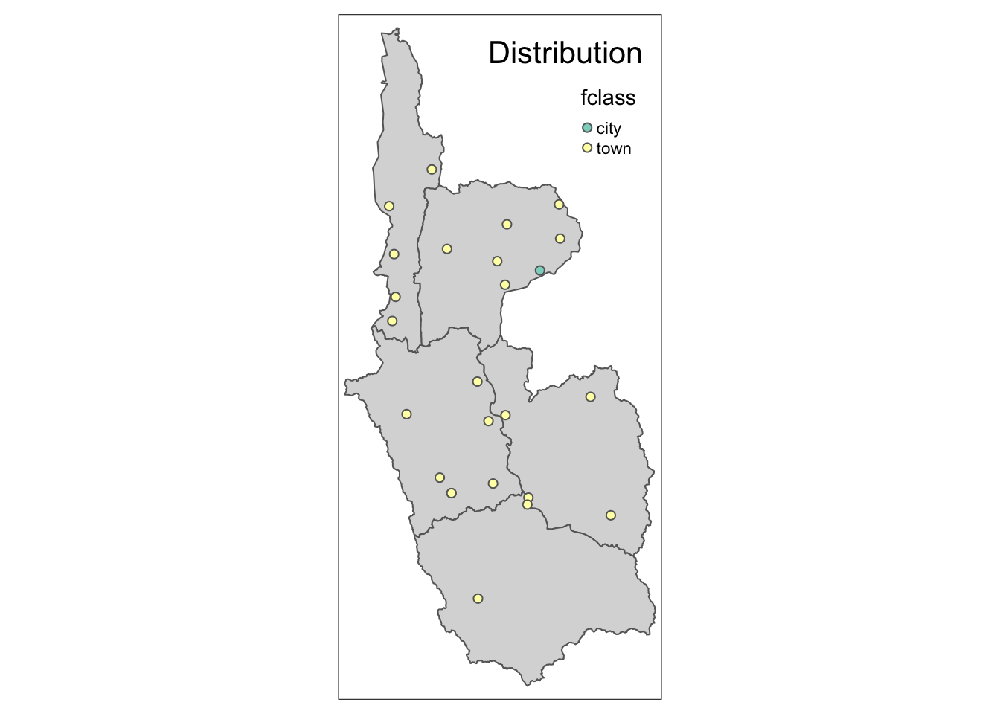
Within Magway we can identify the Pakokku in blue, the largest city in the Magway Region of Myanmar. It is situated about 30 km northeast of Bagan on the Irrawaddy River with a population of 322,154.
While our OSM data does not include ethnicity information, we can explore potential relationships between conflict events and places of worship. By analyzing the spatial proximity between conflict locations and religious sites, we may gain insights into the role of religious identity or affiliation in shaping conflict dynamics.
# Create the distribution map with title and dots
osm_pow_mag_sf <- st_intersection(osm_pow_sf, magway_sf)
tm_shape(magway_sf) +
tm_polygons() +
tm_shape(osm_pow_mag_sf) +
tm_bubbles(col = "fclass", alpha = 0.5, size = 0.1) +
tm_layout(title = "Distribution", title.position = c("right", "top"))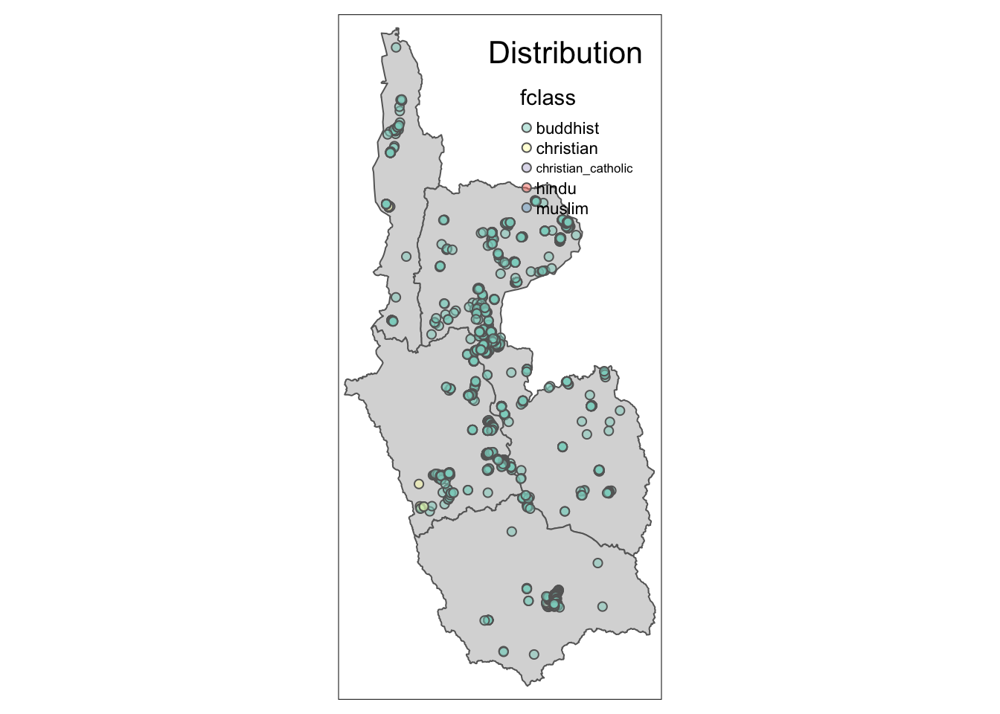
Other than a scatter of other religions in Minbu on the broder with Rakhine in the west the region is mostly dominated by Buddhism.
7.1.3 KDE on OSM
Next we will overlay the OSM points on our density plot to identify their spatial relations.
acled_ppp_pro <- as.ppp(acled_pak_sf %>% filter(event_type == "Protests"))
acled_ppp_bat <- as.ppp(acled_pak_sf %>% filter(event_type == "Battles"))
magway_owin <- as.owin(magway_pak_sf %>% st_union())7.1.3.1 Protests KDE
acled_ppp_kde <- density(acled_ppp_pro[magway_owin], sigma = 5000, edge = TRUE, kernel = "gaussian")
acled_mag_raster <- kde_to_raster(acled_ppp_kde)
pak_kde_raster <- tm_shape(acled_mag_raster) +
tm_raster(alpha = 0.8, palette = "YlOrRd")# Assuming you have a RasterLayer object named 'my_raster'
osm_pak_sf <- st_intersection(osm_sf, magway_pak_sf)
tm_shape(magway_pak_sf) +
tm_polygons(col = "white") +
pak_kde_raster +
tm_shape(osm_pak_sf %>% filter(fclass %in% c("town", "city"))) +
tm_bubbles(col = "fclass", alpha = 1, size = 0.2, palette = c("aquamarine", "cornflowerblue")) +
tm_layout(title = "Places (Protests)", title.position = c("center", "top")) 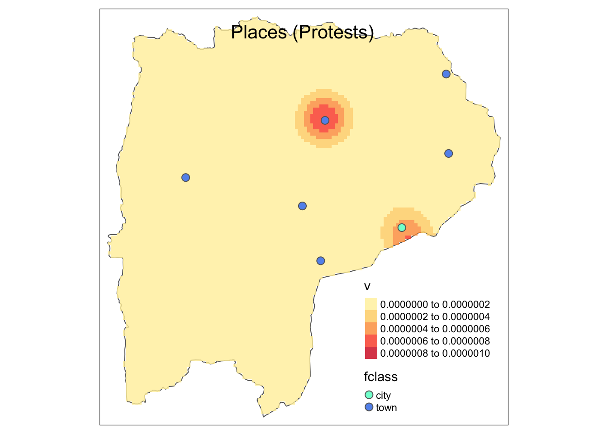
As observed the protests are mostly clustered around the city of Pakokku and the township of Myaing.
# Assuming you have a RasterLayer object named 'my_raster'
osm_pow_pak_sf <- st_intersection(osm_pow_sf, magway_pak_sf)
tm_shape(magway_pak_sf) +
tm_polygons(col = "white") +
pak_kde_raster +
tm_shape(osm_pow_pak_sf) +
tm_bubbles(col = "fclass", alpha = 0.3, size = 0.1, palette = c("aquamarine")) +
tm_layout(title = "Places of Worship (Protests)", title.position = c("center", "top"))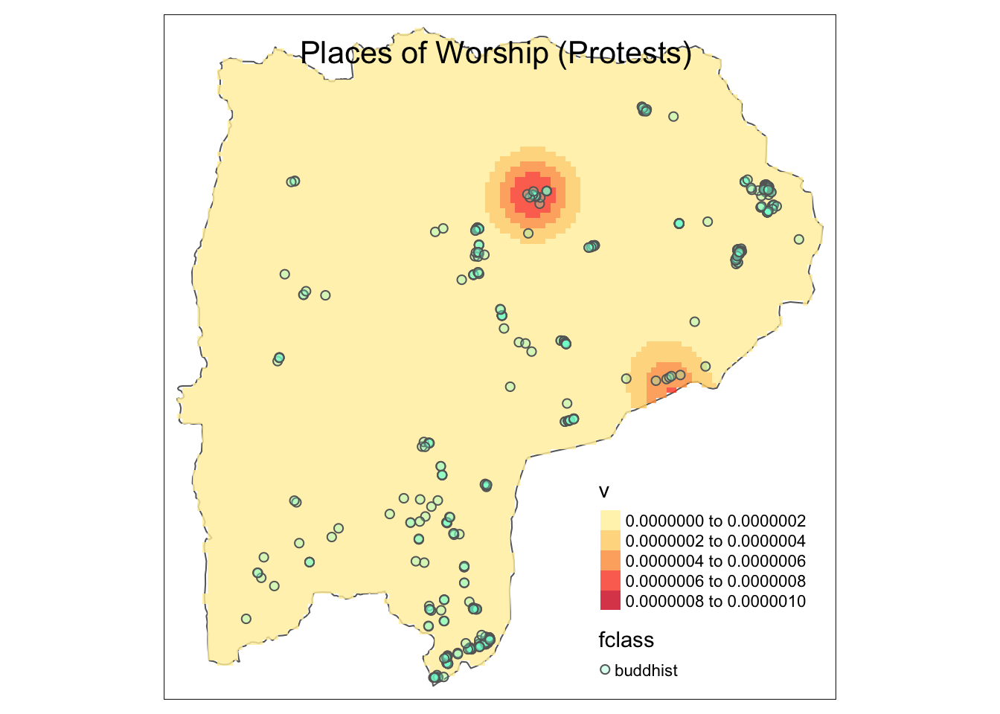
There is not much relations to be observed with places of worship since the dominant and registered religion within the district is Buddhist.
7.1.3.2 Battles KDE
acled_ppp_kde <- density(acled_ppp_bat[magway_owin], sigma = 5000, edge = TRUE, kernel = "gaussian")
acled_mag_raster <- kde_to_raster(acled_ppp_kde)
pak_kde_raster <- tm_shape(acled_mag_raster) +
tm_raster(alpha = 0.8, palette = "YlOrRd")# Assuming you have a RasterLayer object named 'my_raster'
osm_pak_sf <- st_intersection(osm_sf, magway_pak_sf)
tm_shape(magway_pak_sf) +
tm_polygons(col = "white") +
pak_kde_raster +
tm_shape(osm_pak_sf %>% filter(fclass %in% c("town", "city"))) +
tm_bubbles(col = "fclass", alpha = 1, size = 0.2, palette = c("aquamarine", "cornflowerblue")) +
tm_layout(title = "Places (Battles)", title.position = c("center", "top")) 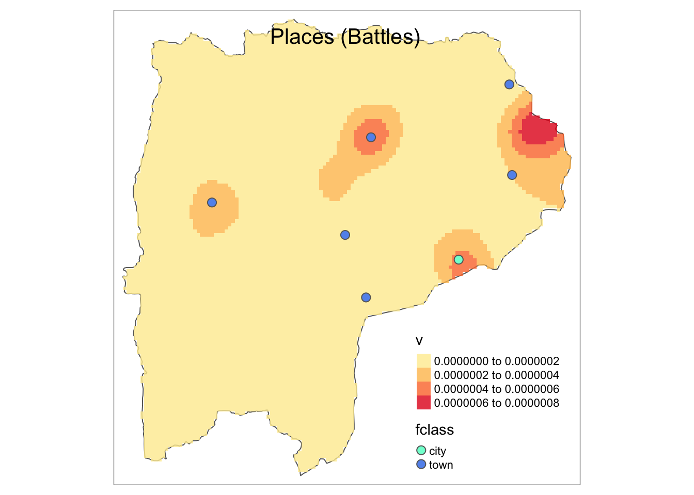
Battles tend to occur in wider radius around towns and cities, while protests are more concentrated in urban centers.
# Assuming you have a RasterLayer object named 'my_raster'
osm_pow_pak_sf <- st_intersection(osm_pow_sf, magway_pak_sf)
tm_shape(magway_pak_sf) +
tm_polygons(col = "white") +
pak_kde_raster +
tm_shape(osm_pow_pak_sf) +
tm_bubbles(col = "fclass", alpha = 0.3, size = 0.1, palette = c("aquamarine")) +
tm_layout(title = "Places of Worship (Battles)", title.position = c("center", "top"))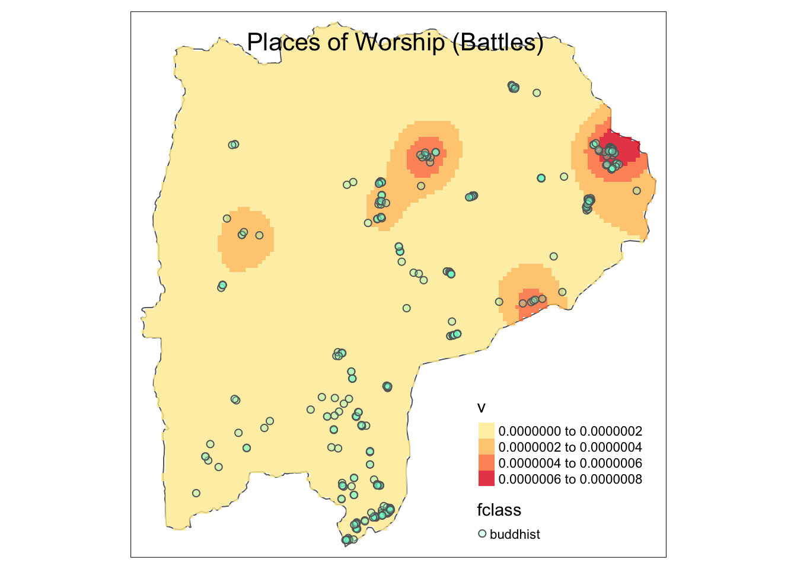
There is not much relations to be observed with places of worship since the dominant and registered religion within the district is Buddhist.
7.2 Analysis of Timeline
Finally lets discuss the event type and its changes over the course of the conflict.
# Filter for the desired event types
grouped_data <- acled_pak_sf %>%
filter(event_type %in% c("Protests", "Battles")) %>%
mutate(year_quarter = year + (quarter %% 1) * 2.5) %>%
group_by(event_type, year_quarter) %>%
summarize(count = n())
# Create the line plot
ggplot(grouped_data, aes(x = year_quarter, y = count, color = event_type)) +
geom_line() +
geom_point() +
labs(title = "Event Type Counts Over Time",
x = "Quarter",
y = "Count") +
scale_color_manual(values = c("Protests" = "red", "Battles" = "blue")) +
theme_minimal()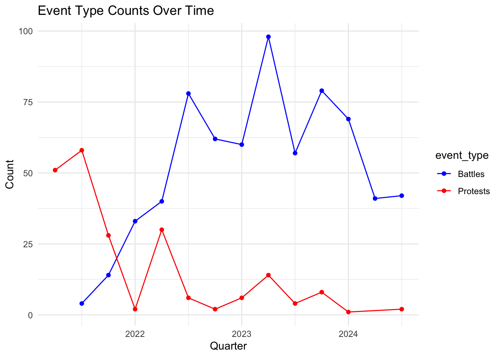
Our analysis reveals a distinct temporal pattern in conflict events. Protests were prevalent in the early stages of the conflict in 2021, but their frequency gradually declined over time. On the other hand, battles have become more frequent, suggesting a shift in the tactics or strategies employed by the conflicting parties.
Several factors may contribute to this trend. The increasing presence of security forces and the implementation of restrictive measures could have suppressed protest activity. Additionally, the evolving dynamics of the conflict, such as changes in leadership or alliances, may have influenced the shift towards more violent confrontations.
7.3 Key Policy and Mitigation Strategies
Promote Dialogue and Reconciliation: To foster peace and stability, it is essential to facilitate inclusive dialogue among all relevant stakeholders. Neutral mediation and trust-building measures can support this process, creating a conducive environment for negotiation and agreement.
Address Root Causes: Addressing the underlying grievances and social injustices that fuel the conflict is crucial for long-term peace. This involves promoting socioeconomic development, ensuring human rights protection, and fostering inter-ethnic reconciliation.
Security Sector Reform: Reforming the security sector is essential for creating a more accountable, professional, and human rights-respecting force. This includes measures such as demilitarization, civilian control, and support for disarmament, demobilization, and reintegration programs.
8. Personal Reflection
8.1 Technically
I’ve learned how to use spatial analysis tools effectively, especially for first-order, second-order and spatial temporal analyses. The spatstat and sparr packages were invaluable for this. The EDA with ggplot was also tremendously helpful for my subsequent.